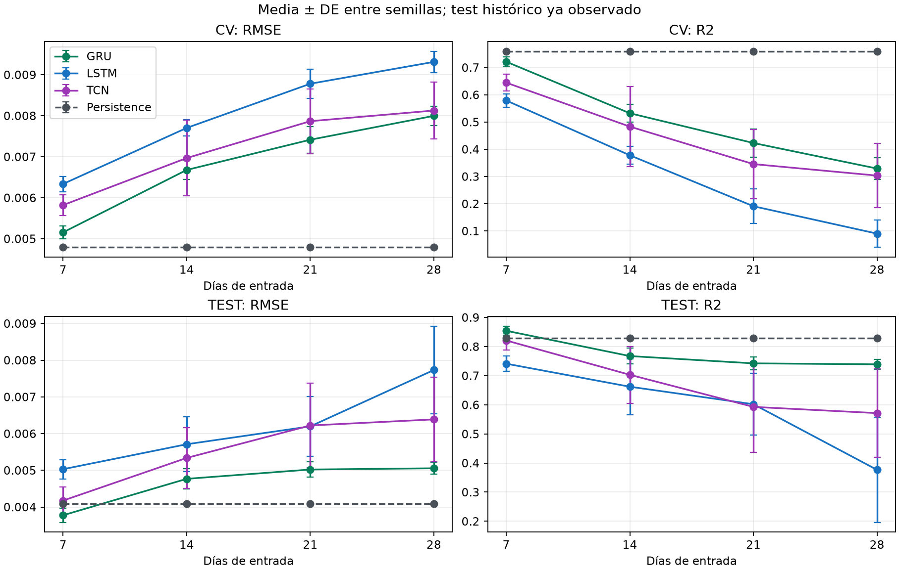
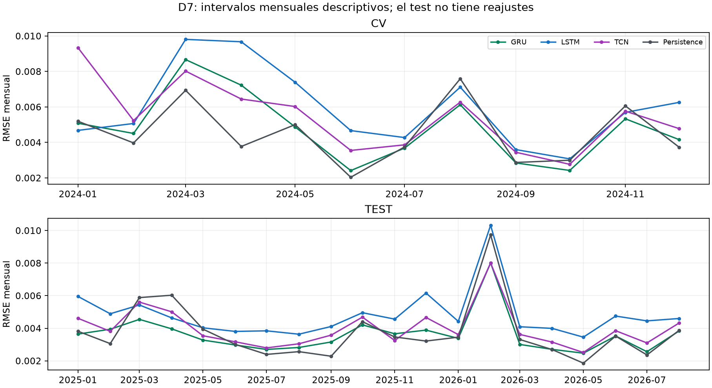

5. Benchmark de los Modelos Base y Definición del Baseline#
Dos fases del estudio. Las tablas de cuatro entradas, diez semillas y test enero de 2025–agosto de 2026 de este capítulo corresponden a la fase I exploratoria. La fase II D7 añade búsqueda equitativa, piloto anterior a su ejecución definitiva, dimensionamiento y evaluación preespecificada sobre el 01/09–30/10/2026. Sus recetas, recuentos y resultados se identifican por separado en el capítulo 9.
El benchmark principal compara GRU, LSTM y TCN residual causal, en D=7/14/21/28, con diez semillas por receta, cinco covariables OHLCV diarias y objetivo sigma7 poblacional a h=1 día. GRU/D7 es el baseline neuronal seleccionado con CV2024, anterior al ajuste final de esta fase.
La CV produjo 120 trayectorias, 2.880 ajustes y 43.920 predicciones. El control LSTM se reentrenó y reprodujo exactamente 14.640 pronósticos. La evaluación 01/01/2025–31/08/2026 reúne 608 fechas y 72.960 valores: ochenta modelos GRU/TCN nuevos y cuarenta LSTM reutilizados, con pesos fijos y sin reajustes en test.
El test ya se había observado antes de diseñar esta comparación. Los resultados son exploratorios, condicionados al calendario y a las recetas, sin confirmación temporal independiente. Los análisis actuales entre las tres redes y los diagnósticos se definieron después de inspeccionar ese test; su plan público preserva esa fecha. No modifican modelos ni realizan nuevas inferencias.
GRU/D7 reduce RMSE en este test frente a TCN, LSTM y persistencia. Persistencia tiene menor RMSE en CV y conserva mejor MAE y MAPE en test. Ese resultado exige distinguir métrica, periodo y tipo de incertidumbre, sin declarar una ganadora universal.
5.1. Comparación Tabular#
Las tablas presentan todas las historias y las seis métricas. Los agregados entre semillas se calculan después de puntuar cada trayectoria completa.
5.1.1. Tabla de comparación de los tres modelos base#
Las descargas CV y test contienen medias, DE muestrales, IC y conteos definidos. Las redes tienen diez semillas; persistencia es una sola trayectoria determinista y se identifica por D para conservar su denominador MASE.

5.1.1.1. Modelo base#
CV2024: 366 fechas por trayectoria.
D |
Modelo |
RMSE, media ± DE |
IC95 % RMSE |
R², media ± DE |
Parámetros |
|---|---|---|---|---|---|
7 |
GRU |
0,0051546 ± 0,0001616 |
[0,0050390; 0,0052701] |
0,721214 ± 0,017505 |
3777 |
7 |
LSTM |
0,0063354 ± 0,0001870 |
[0,0062016; 0,0064692] |
0,578892 ± 0,024807 |
5025 |
7 |
TCN |
0,0058196 ± 0,0002562 |
[0,0056363; 0,0060029] |
0,644330 ± 0,030513 |
4289 |
7 |
Persistencia |
0,0047890 |
No aplica a semillas |
0,759571 |
0 |
14 |
GRU |
0,0066768 ± 0,0002370 |
[0,0065073; 0,0068464] |
0,532118 ± 0,033416 |
3777 |
14 |
LSTM |
0,0077018 ± 0,0001999 |
[0,0075588; 0,0078448] |
0,377765 ± 0,032441 |
5025 |
14 |
TCN |
0,0069670 ± 0,0009256 |
[0,0063048; 0,0076292] |
0,483061 ± 0,147325 |
4289 |
14 |
Persistencia |
0,0047890 |
No aplica a semillas |
0,759571 |
0 |
21 |
GRU |
0,0074140 ± 0,0003267 |
[0,0071803; 0,0076477] |
0,422748 ± 0,051604 |
3777 |
21 |
LSTM |
0,0087796 ± 0,0003524 |
[0,0085275; 0,0090317] |
0,190751 ± 0,063743 |
5025 |
21 |
TCN |
0,0078665 ± 0,0007890 |
[0,0073021; 0,0084309] |
0,345395 ± 0,127822 |
4289 |
21 |
Persistencia |
0,0047890 |
No aplica a semillas |
0,759571 |
0 |
28 |
GRU |
0,0079966 ± 0,0002369 |
[0,0078271; 0,0081660] |
0,329105 ± 0,040046 |
3777 |
28 |
LSTM |
0,0093129 ± 0,0002589 |
[0,0091277; 0,0094980] |
0,090149 ± 0,050359 |
5025 |
28 |
TCN |
0,0081262 ± 0,0006931 |
[0,0076304; 0,0086220] |
0,303192 ± 0,118173 |
4289 |
28 |
Persistencia |
0,0047890 |
No aplica a semillas |
0,759571 |
0 |
El parámetro D no cambia n=7 ni h=1. Los pesos se comparten temporalmente y sus conteos no aumentan con D. Aumentar la historia también aumenta el embargo y reduce el entrenamiento elegible.
5.1.1.2. Métricas: media ± desviación estándar#
Test histórico: 608 fechas por trayectoria.
D |
Modelo |
RMSE, media ± DE |
IC95 % RMSE |
R², media ± DE |
Parámetros |
|---|---|---|---|---|---|
7 |
GRU |
0,0037751 ± 0,0001941 |
[0,0036363; 0,0039140] |
0,854173 ± 0,015331 |
3777 |
7 |
LSTM |
0,0050298 ± 0,0002637 |
[0,0048412; 0,0052184] |
0,741108 ± 0,026619 |
5025 |
7 |
TCN |
0,0041747 ± 0,0003728 |
[0,0039079; 0,0044414] |
0,820819 ± 0,032191 |
4289 |
7 |
Persistencia |
0,0040856 |
No aplica a semillas |
0,829605 |
0 |
14 |
GRU |
0,0047674 ± 0,0002737 |
[0,0045716; 0,0049632] |
0,767302 ± 0,026815 |
3777 |
14 |
LSTM |
0,0057094 ± 0,0007524 |
[0,0051711; 0,0062476] |
0,662048 ± 0,095907 |
5025 |
14 |
TCN |
0,0053366 ± 0,0008272 |
[0,0047449; 0,0059284] |
0,702991 ± 0,097530 |
4289 |
14 |
Persistencia |
0,0040856 |
No aplica a semillas |
0,829605 |
0 |
21 |
GRU |
0,0050212 ± 0,0002070 |
[0,0048731; 0,0051693] |
0,742235 ± 0,021903 |
3777 |
21 |
LSTM |
0,0061970 ± 0,0008139 |
[0,0056148; 0,0067792] |
0,601894 ± 0,106170 |
5025 |
21 |
TCN |
0,0062210 ± 0,0011532 |
[0,0053960; 0,0070459] |
0,592724 ± 0,156640 |
4289 |
21 |
Persistencia |
0,0040856 |
No aplica a semillas |
0,829605 |
0 |
28 |
GRU |
0,0050551 ± 0,0001589 |
[0,0049415; 0,0051688] |
0,738908 ± 0,016552 |
3777 |
28 |
LSTM |
0,0077325 ± 0,0011902 |
[0,0068811; 0,0085839] |
0,376622 ± 0,180465 |
5025 |
28 |
TCN |
0,0063864 ± 0,0011537 |
[0,0055611; 0,0072117] |
0,571424 ± 0,151746 |
4289 |
28 |
Persistencia |
0,0040856 |
No aplica a semillas |
0,829605 |
0 |
Métricas secundarias de CV.
D |
Modelo |
MAE, media ± DE |
MAPE %, media ± DE |
MSE, media ± DE |
MASE, media ± DE |
|---|---|---|---|---|---|
7 |
GRU |
0,0036192 ± 0,0001308 |
16,0924 ± 0,6301 |
0,0000265931 ± 0,0000016698 |
1,37600 ± 0,04946 |
7 |
LSTM |
0,0047263 ± 0,0001245 |
21,7863 ± 0,8045 |
0,0000401690 ± 0,0000023663 |
1,78982 ± 0,04645 |
7 |
TCN |
0,0042473 ± 0,0001500 |
18,9330 ± 0,6031 |
0,0000339270 ± 0,0000029106 |
1,61777 ± 0,05925 |
7 |
Persistencia |
0,0029435 |
13,5521 |
0,0000229342 |
1,11835 |
14 |
GRU |
0,0049486 ± 0,0001794 |
21,7150 ± 0,7837 |
0,0000446307 ± 0,0000031875 |
1,87334 ± 0,06847 |
14 |
LSTM |
0,0056700 ± 0,0001658 |
24,4425 ± 1,4407 |
0,0000593542 ± 0,0000030945 |
2,14989 ± 0,06420 |
14 |
TCN |
0,0050224 ± 0,0003579 |
22,0064 ± 1,3197 |
0,0000493102 ± 0,0000140531 |
1,91020 ± 0,14217 |
14 |
Persistencia |
0,0029435 |
13,5521 |
0,0000229342 |
1,11335 |
21 |
GRU |
0,0054819 ± 0,0002303 |
23,8402 ± 0,9648 |
0,0000550634 ± 0,0000049224 |
2,07691 ± 0,08821 |
21 |
LSTM |
0,0062492 ± 0,0002399 |
26,2239 ± 1,0187 |
0,0000771933 ± 0,0000060804 |
2,36819 ± 0,09224 |
21 |
TCN |
0,0054871 ± 0,0004066 |
23,0163 ± 1,2862 |
0,0000624420 ± 0,0000121928 |
2,08595 ± 0,15775 |
21 |
Persistencia |
0,0029435 |
13,5521 |
0,0000229342 |
1,11245 |
28 |
GRU |
0,0056527 ± 0,0001611 |
24,2246 ± 0,5269 |
0,0000639959 ± 0,0000038200 |
2,16339 ± 0,06176 |
28 |
LSTM |
0,0064968 ± 0,0001772 |
26,1069 ± 0,8578 |
0,0000867896 ± 0,0000048037 |
2,47789 ± 0,06705 |
28 |
TCN |
0,0056234 ± 0,0003789 |
23,0948 ± 1,5804 |
0,0000664677 ± 0,0000112723 |
2,15431 ± 0,14961 |
28 |
Persistencia |
0,0029435 |
13,5521 |
0,0000229342 |
1,12126 |
Métricas secundarias del test histórico.
D |
Modelo |
MAE, media ± DE |
MAPE %, media ± DE |
MSE, media ± DE |
MASE, media ± DE |
|---|---|---|---|---|---|
7 |
GRU |
0,0027985 ± 0,0001892 |
18,0667 ± 1,5054 |
0,0000142854 ± 0,0000015019 |
1,03256 ± 0,06982 |
7 |
LSTM |
0,0039189 ± 0,0002196 |
25,3406 ± 3,4056 |
0,0000253613 ± 0,0000026077 |
1,44595 ± 0,08102 |
7 |
TCN |
0,0031443 ± 0,0003475 |
19,8847 ± 2,4480 |
0,0000175528 ± 0,0000031535 |
1,16015 ± 0,12823 |
7 |
Persistencia |
0,0023532 |
13,7553 |
0,0000166921 |
0,86825 |
14 |
GRU |
0,0035609 ± 0,0003000 |
22,1494 ± 2,5660 |
0,0000227953 ± 0,0000026269 |
1,31402 ± 0,11069 |
14 |
LSTM |
0,0042049 ± 0,0004001 |
24,6377 ± 1,6635 |
0,0000331062 ± 0,0000093952 |
1,55164 ± 0,14765 |
14 |
TCN |
0,0040122 ± 0,0005922 |
24,6464 ± 4,2369 |
0,0000290954 ± 0,0000095541 |
1,48055 ± 0,21853 |
14 |
Persistencia |
0,0023532 |
13,7553 |
0,0000166921 |
0,86834 |
21 |
GRU |
0,0037942 ± 0,0001314 |
22,6636 ± 0,7514 |
0,0000252510 ± 0,0000021456 |
1,39217 ± 0,04820 |
21 |
LSTM |
0,0045288 ± 0,0004498 |
26,6124 ± 3,0421 |
0,0000389989 ± 0,0000104005 |
1,66172 ± 0,16505 |
21 |
TCN |
0,0045999 ± 0,0007228 |
27,9433 ± 5,7696 |
0,0000398973 ± 0,0000153447 |
1,68782 ± 0,26522 |
21 |
Persistencia |
0,0023532 |
13,7553 |
0,0000166921 |
0,86343 |
28 |
GRU |
0,0038322 ± 0,0001177 |
23,6993 ± 1,3838 |
0,0000255769 ± 0,0000016214 |
1,40706 ± 0,04320 |
28 |
LSTM |
0,0053131 ± 0,0007067 |
30,8444 ± 6,5454 |
0,0000610668 ± 0,0000176786 |
1,95080 ± 0,25949 |
28 |
TCN |
0,0046625 ± 0,0006904 |
28,2255 ± 5,0322 |
0,0000419838 ± 0,0000148653 |
1,71193 ± 0,25350 |
28 |
Persistencia |
0,0023532 |
13,7553 |
0,0000166921 |
0,86401 |
Las métricas usan la escala original de sigma7. MAPE está expresada en porcentaje; MSE tiene unidades cuadráticas. MASE mantiene el denominador aprendido con el entrenamiento de cada D. Persistencia tiene mejor MAE y MAPE que GRU/D7 en test, aunque GRU tenga menor RMSE; no se descartan esas métricas.
5.1.1.3. Intervalos de confianza del 95 % y método de construcción#
El IC95 % marginal de una métrica es \(\bar m\pm t_{0{,}975;9}s_m/\sqrt{10}\). Describe aleatoriedad de entrenamiento condicionada a fechas y receta, sin incorporar una nueva trayectoria de mercado. No se interpreta el solapamiento de IC marginales como una prueba entre modelos; para eso se utilizan las diferencias pareadas.
Persistencia no tiene un IC entre semillas. Esa ausencia no significa que su error carezca de incertidumbre temporal.
5.1.1.4. Tiempo de entrenamiento y de inferencia#
Modelo D7 |
Train CV, segundos ± DE |
Inferencia CV registrada, segundos ± DE |
Parámetros |
|---|---|---|---|
GRU |
32,53 ± 2,91 |
0,002635 ± 0,000177 |
3777 |
LSTM |
14,65 ± 1,88 |
0,002318 ± 0,000167 |
5025 |
TCN |
73,35 ± 8,82 |
0,008192 ± 0,000584 |
4289 |
La tabla suma tiempos registrados de la trayectoria CV y sus mediciones de inferencia; no es una prueba aislada de latencia online. La duración elegida, CPU y concurrencia afectan el costo. Los tiempos CV y finales conservan todos los D. LSTM final tiene costo incremental cero por reutilización, sin eliminar su costo histórico.
5.1.1.5. Número de parámetros#
GRU tiene 3.777 parámetros, TCN 4.289 y LSTM 5.025 en todos los D. Persistencia no ajusta pesos. Igual número de parámetros no implica igual costo: recurrentes y convoluciones ejecutan operaciones diferentes, y la época de parada también varía.
5.2. Ranking de Modelos Base#
El orden de selección procede exclusivamente de CV. El test describe después las recetas ya cerradas.
5.2.1. Orden de los tres modelos según la métrica principal#
D |
Orden neuronal por RMSE CV |
RMSE GRU CV |
RMSE persistencia CV |
|---|---|---|---|
7 |
GRU → TCN → LSTM |
0,0051546 |
0,0047890 |
14 |
GRU → TCN → LSTM |
0,0066768 |
0,0047890 |
21 |
GRU → TCN → LSTM |
0,0074140 |
0,0047890 |
28 |
GRU → TCN → LSTM |
0,0079966 |
0,0047890 |
Las tres redes seleccionan D7; GRU/D7 obtiene RMSE CV 0,0051545685 ± 0,0001615571, frente a 0,0058196121 de TCN/D7 y 0,0063354143 de LSTM/D7. Persistencia obtiene 0,0047889696. El cierre de selección no se sustituye por otro orden al observar test.
5.2.2. Análisis del trade-off#
Se comparan error, variabilidad, parámetros y tiempos de la receta completa. Un menor error en un único calendario no garantiza que el costo adicional resulte útil fuera de muestra.
5.2.2.1. Precisión frente a costo computacional#
En D7/CV, GRU consume más tiempo registrado que LSTM a pesar de tener menos parámetros; TCN es la más costosa de las tres en esta ejecución. El número de épocas y los operadores impiden atribuir todo el tiempo a una única causa. El costo final de reutilizar LSTM se separa del de entrenarla.
5.2.2.2. Precisión frente a complejidad del modelo#
GRU es la red de menor número de pesos; LSTM mantiene una celda de memoria adicional y TCN emplea seis convoluciones en tres bloques residuales. Que GRU tenga menor RMSE aquí no demuestra que la complejidad adicional sea innecesaria en otros periodos o con otro ajuste.
5.3. Definición del Baseline y Margen de Mejora Disponible#
Baseline significa aquí la referencia neuronal seleccionada con desarrollo. Persistencia permanece como referencia determinista contextual y como condición adicional para una mejora avanzada.
5.3.1. Selección del baseline de referencia#
Se selecciona GRU/D7 por la media de RMSE CV, conservando las reglas causales y la representación relativa. La decisión antecede al ajuste final y a esta puntuación, aunque el calendario histórico ya fuera conocido.
5.3.1.1. Identificación del mejor modelo base#
GRU/D7 es el mejor modelo neuronal según CV. Su elección no depende de escoger una semilla afortunada: se utiliza la media de diez ejecuciones. Persistencia es mejor en RMSE CV; por ello el término baseline neuronal no implica que GRU ya venza a una referencia ingenua en desarrollo.
5.3.1.2. Desempeño con media, desviación e IC del 95 %#
Periodo |
RMSE GRU/D7: media ± DE |
IC95 % marginal |
R²: media ± DE |
|---|---|---|---|
CV2024 |
0,0051545685 ± 0,0001615571 |
[0,0050389976; 0,0052701395] |
0,721214 ± 0,017505 |
Test histórico |
0,0037751113 ± 0,0001941007 |
[0,0036362600; 0,0039139626] |
0,854173 ± 0,015331 |
Persistencia tiene RMSE test 0,0040855959 y R² 0,829605. Sus MAE 0,0023531639 y MAPE 13,7553 % son menores que los de GRU, 0,0027985090 y 18,0667 %. CV y test describen regímenes y políticas de ajuste diferentes; no se interpreta su diferencia como una ganancia causal.
5.3.2. Cuantificación de las diferencias entre modelos base#
Las diferencias se calculan sobre resultados de las mismas semillas y fechas. La dirección, escala y denominador se explicitan antes de interpretarlas.
5.3.2.1. Regresión y series de tiempo: diferencias respecto al peor y al mejor modelo#
Para una referencia B y un modelo A, la ganancia absoluta es RMSE(B)−RMSE(A) y la reducción relativa es \(100[1-\mathrm{RMSE}(A)/\mathrm{RMSE}(B)]\).
En D7/test, la ganancia media de GRU frente a LSTM es 0,0012546753, aproximadamente 24,94 %; frente a TCN es 0,0003995392, aproximadamente 9,57 %. Frente a persistencia la reducción puntual de RMSE es aproximadamente 7,60 %. Esta última no forma parte de la familia de tres contrastes neuronales y no recibe sus p-valores.
5.3.2.2. Clasificación, etiquetado secuencial y segmentación#
No aplica como tarea de clasificación o etiquetado: no hay clases ni entidades. No se convierten reducciones de RMSE en exactitud de clasificación ni en probabilidades de rentabilidad.
5.3.2.3. Secuencia a secuencia#
No aplica a generación de secuencias: se predice un escalar a h=1. Los doce bloques mensuales de CV agrupan 366 pronósticos diarios por trayectoria; los veinte intervalos de reporte de test agrupan 608. Esa agregación temporal no convierte la salida escalar en una tarea de traducción o decodificación.
5.3.2.4. Tamaño de efecto de cada diferencia#
Fase |
A − B |
d_z pareado |
IC95 % bootstrap de d_z |
|---|---|---|---|
CV |
GRU − LSTM |
-4,180 |
[-7,471; -3,139] |
CV |
GRU − TCN |
-2,428 |
[-4,822; -1,700] |
CV |
LSTM − TCN |
1,262 |
[0,843; 2,474] |
TEST |
GRU − LSTM |
-4,182 |
[-10,976; -3,077] |
TEST |
GRU − TCN |
-1,124 |
[-2,604; -0,574] |
TEST |
LSTM − TCN |
2,006 |
[1,486; 3,469] |
\(d_z=\bar d/s_d\) usa diferencias A−B por semilla. Un valor negativo favorece A para RMSE. Su escala depende de la DE de diferencias, no es una reducción porcentual ni un efecto económico. Los IC bootstrap de 4.999 remuestras son sensibilidades condicionales a diez pares.
5.3.3. Inferencia sobre las diferencias#
La familia D7 contiene GRU−LSTM, GRU−TCN y LSTM−TCN, con diez diferencias de RMSE por par. Se aplica t bilateral y Holm-3 separadamente en CV y test. La familia se definió después de observar test: sus p-valores son exploratorios, no el resultado confirmatorio de una selección bibliográfica o estadística previa.
Las descargas CV y test conservan p brutos/ajustados, diferencias, IC, efectos y diagnósticos. La sensibilidad de cuatro D contiene doce pares por fase y usa Holm-12; no se elige la corrección más favorable.
5.3.3.1. Comparaciones pareadas y corrección por multiplicidad#
H0 es media de las diferencias de RMSE igual a cero, frente a alternativa bilateral. Se parean las diez semillas nominales, sin tratar meses como réplicas. Holm ordena tres p-valores y los compara secuencialmente con α/3, α/2 y α; no impone α/3 a cada contraste. α=0,05 es la convención del análisis posterior.
5.3.3.2. Diferencia media, IC del 95 % y p-value ajustado y sin ajustar#
Fase |
A − B |
Diferencia media RMSE |
IC95 % |
p sin ajustar |
p Holm-3 |
|---|---|---|---|---|---|
CV |
GRU − LSTM |
-0,0011808 |
[-0,0013829; -0,0009788] |
3.36628e-07 |
1.00988e-06 |
CV |
GRU − TCN |
-0,0006650 |
[-0,0008610; -0,0004691] |
3.06616e-05 |
6.13232e-05 |
CV |
LSTM − TCN |
0,0005158 |
[0,0002234; 0,0008082] |
0.00315693 |
0.00315693 |
TEST |
GRU − LSTM |
-0,0012547 |
[-0,0014693; -0,0010400] |
3.35348e-07 |
1.00604e-06 |
TEST |
GRU − TCN |
-0,0003995 |
[-0,0006538; -0,0001453] |
0.00616503 |
0.00616503 |
TEST |
LSTM − TCN |
0,0008551 |
[0,0005502; 0,0011601] |
0.000133987 |
0.000267974 |
Los tres pares D7 se distinguen de cero con Holm-3 en cada fase. Los IC familiares Bonferroni de nivel individual 98,333 % también excluyen cero. El orden neuronal medio es GRU–TCN–LSTM en D7; eso no acredita generalización nueva, selección independiente o una mejora práctica de cualquier magnitud.
5.3.4. Umbral de mejora para modelos avanzados#
Se define un criterio operativo para evaluar posteriormente un modelo avanzado. Al haberse observado ya el test, este criterio es una propuesta futura y no una regla que hubiera gobernado el experimento presentado.
5.3.4.1. Mejora mínima detectable frente al baseline#
El número de semillas actual no procede de un piloto de potencia. No se afirma potencia 0,80 ni se calcula «potencia alcanzada» usando el efecto observado. La MDE del futuro avanzado depende de su propia dispersión pareada frente a las referencias y del procedimiento previsto.
Si la MDE supera el margen relevante, habrá que mejorar el diseño o declarar esa limitación. Aumentar semillas sólo precisa el componente de aleatoriedad del entrenamiento sobre estas fechas; no proporciona otro mercado o un test desconocido.
5.3.4.2. Margen de relevancia práctica#
Se fija ahora \(\delta=0{,}05\times\mathrm{RMSE}_{CV}(\mathrm{GRU/D7})=0{,}000257728426649811\). El registro del margen declara su definición posterior al test y su finalidad académica.
Una evaluación futura deberá exigir una mejora relevante frente a GRU/D7 y persistencia, con piloto y multiplicidad propios. Un IC que excluye cero no demuestra automáticamente superar δ; este umbral tampoco equivale a una utilidad financiera.
5.3.4.3. Cota de referencia del problema#
Persistencia es una referencia reproducible y observable, no una cota óptima del problema. Ninguno de los resultados permite afirmar que se alcanzó el error irreducible. El soporte de ocho cierres de persistencia difiere de D7; se mantiene visible esa diferencia de información.
5.3.5. Interpretación#
Se distinguen error observado, diferencia entre semillas, contraste temporal y margen práctico. Responden a preguntas relacionadas, sin ser corroboraciones independientes.
5.3.5.1. Significación estadística y relevancia práctica#
Los contrastes D7 rechazan diferencia cero entre las redes bajo su referencia t y corrección declarada. La relevancia práctica exige además un margen justificado y una evaluación nueva. No se emplea el margen definido ahora para describir el benchmark como un éxito previsto de antemano.
5.3.5.2. Desempeño frente a complejidad, parámetros y costo#
GRU combina menor RMSE D7 con menos pesos, pero no con menor tiempo CV que LSTM. TCN introduce convoluciones causales y residuos, con costo mayor en esta ejecución. La decisión práctica requiere valorar precisión, estabilidad, recursos y complejidad de mantenimiento.
5.3.5.3. Conclusión explícita del baseline y margen disponible#
El baseline neuronal vigente es GRU/D7. Persistencia continúa como referencia adicional; la ganancia RMSE de test de GRU no se extiende a MAE y MAPE. El margen operativo futuro es 0,0002577284 y se declara posterior a la observación de test.
5.3.5.4. Estado del benchmark#
El benchmark inicial de doce recetas y diez semillas está ejecutado; su comparación interna y diagnósticos permanecen posteriores y exploratorios. La fase II D7 incorpora HPO, piloto, dimensionamiento y una evaluación preespecificada sobre otra reserva histórica (§9). Ese cierre no se atribuye a las otras entradas y un futuro modelo avanzado requiere su propia planificación y datos no usados para diseñarlo.
5.4. Análisis Estadístico y Pruebas de Hipótesis#
El plan del análisis público está fechado el 05/11/2026, después de puntuar e inspeccionar el test histórico. Distingue diferencias de RMSE por semilla, prueba conjunta por bloques de semilla, pérdidas diarias y diagnósticos mensuales. No se acumulan sus rechazos como evidencia independiente.
Las estimaciones se calculan desde resultados guardados, sin reajustar pesos ni realizar nuevas inferencias.
5.4.1. Hipótesis, unidad de análisis y supuestos#
Para los pares neuronales, la unidad es una RMSE de periodo completo por semilla. Se supone una distribución de diferencias compatible con la referencia t y ejecuciones de RNG independientes, condicionadas al calendario. Diez semillas no son diez periodos de mercado. Para DM la unidad es una pérdida por fecha; para diagnósticos, el bloque mensual.
5.4.2. Comparaciones pareadas: t y Wilcoxon#
El contraste informado es t pareada bilateral, \(t=\bar d/(s_d/\sqrt{10})\), con nueve grados de libertad. Shapiro se presenta como diagnóstico y no selecciona una prueba alternativa tras observar p.
Wilcoxon exige otros supuestos y no se ejecutó como una segunda oportunidad de significación. Su resolución discreta depende de pares útiles, ceros y empates. El hecho de disponer de diez semillas no demuestra potencia suficiente para t o rangos.
5.4.3. Comparación conjunta de tres modelos#
Se calculó Friedman para tres redes D7 y diez bloques de semilla: χ²≈18,2, p≈0,000111666 en CV y χ²≈16,8, p≈0,000224867 en test, con dos grados de libertad. La tabla conjunta conserva también Holm-2 como sensibilidad entre fases.
Es una aproximación chi-cuadrado con sólo diez bloques; su interpretación es condicional a estas fechas. No localiza por sí sola los pares distintos ni transforma la familia posterior en confirmatoria.
5.4.4. Comparaciones post-hoc y corrección por multiplicidad#
Los tres pares D7 reciben Holm-3 por fase. La sensibilidad de las cuatro historias conserva doce hipótesis y Holm-12: CV y test.
Friedman, pares por semilla, DM y diagnósticos son familias distintas con objetivos distintos. Las correcciones no constituyen control global de todas las decisiones históricas y de esta revisión posterior; ese límite se conserva.
5.4.5. Intervalos de confianza y tamaño de efecto#
Se publican IC95 % marginales, IC familiares Bonferroni y d_z junto con sus convenciones. La incertidumbre por semillas no reemplaza la dependencia y variación temporal.
5.4.5.1. Bootstrap de las diferencias pareadas#
La sensibilidad de efecto usa 4.999 remuestras pareadas de las diez diferencias, con reemplazo; se recalcula d_z en cada muestra y se informa cuántas fueron definidas. No se remuestrean meses como mercados ni se reentrenan redes. Con diez pares y cocientes por una DE estimada, el bootstrap puede ser inestable y no certifica cobertura exacta.
5.4.5.2. Tamaño de efecto junto con el p-value#
Se conserva el signo A−B para diferencia y d_z; negativo favorece A. Un efecto grande puede surgir de poca dispersión entre inicializaciones y no equivale a una gran reducción absoluta del error. Las tablas de §5.3.2.4 y los CSV mantienen efecto, IC y p en conjunto.
5.4.6. Advertencia sobre independencia#
Todos los modelos comparten fechas y objetivos; pares, meses y métricas no son experimentos independientes.
5.4.6.1. Ejecuciones que comparten el conjunto de prueba#
Las 608 fechas del test son una sola trayectoria de mercado. Cambiar la semilla estima sensibilidad del entrenamiento sobre esa trayectoria. Reutilizar LSTM es un control identificado, sin generar información de mercado nueva ni una réplica adicional de sus predicciones.
5.4.6.2. Validación repetida y remuestreo por bloques#
Los doce meses CV contienen entrenamientos crecientes y las ventanas del objetivo se solapan. No se aplica automáticamente una corrección de CV aleatoria ni se remuestrean esos meses como bloques independientes. La sensibilidad bootstrap presentada remuestrea semillas; cualquier bootstrap temporal requeriría longitud de bloque y alcance propios.
5.4.7. Reporte de potencia y diferencia mínima detectable#
Se informa R=10 como presupuesto fijo y la ausencia de piloto prospectivo de potencia para GRU/TCN. El margen futuro se define después del test. No se usa el p observado ni d_z para declarar potencia alcanzada, y no se atribuye al trío un tamaño dimensionado para otros procedimientos.
5.4.8. Ausencia de significación y equivalencia#
No rechazar diferencia cero no demuestra equivalencia. Si una propuesta futura afirma equivalencia, necesitará márgenes y procedimiento, por ejemplo TOST o una ROPE justificada, fijados antes. No se ejecuta ni exige una prueba de equivalencia para interpretar este benchmark de diferencias.
5.4.9. Test de Diebold–Mariano#
DM compara pérdidas cuadráticas diarias en unidades originales, promediadas entre las diez semillas. El estimando es distinto de la media de RMSE por semilla. Se conserva h=1, HAC Bartlett/Newey–West con seis rezagos y corrección HLN; la familia tiene tres pares por fase.
Los resultados CV y test son exploratorios y posteriores al test.
5.4.9.1. Comparación de precisión predictiva por horizonte#
Fase |
A − B |
DM con HLN |
p sin ajustar |
p Holm-3 |
|---|---|---|---|---|
CV |
GRU − LSTM |
-4,059 |
6.0442e-05 |
0.000181326 |
CV |
GRU − TCN |
-1,868 |
0.0625374 |
0.125075 |
CV |
LSTM − TCN |
1,164 |
0.245324 |
0.245324 |
TEST |
GRU − LSTM |
-6,258 |
7.38874e-10 |
2.21662e-09 |
TEST |
GRU − TCN |
-5,232 |
2.31746e-07 |
4.63492e-07 |
TEST |
LSTM − TCN |
4,636 |
4.35165e-06 |
4.35165e-06 |
En CV, GRU−TCN tiene p Holm≈0,1251 y no rechaza; la t por semillas sí rechaza. En test, ese DM tiene p Holm≈4,63×10⁻⁷. La diferencia no se resuelve eligiendo el p menor: cambian unidad, pérdida y dependencia tratada.
5.4.9.2. Corrección Harvey–Leybourne–Newbold y pérdida coherente#
La estadística usa la varianza de largo plazo del diferencial diario con covarianzas divididas por n, kernel Bartlett y seis rezagos; HLN utiliza horizonte uno y referencia t con n−1 grados de libertad. Los seis rezagos atienden el solapamiento de sigma7, sin garantizar que capturen toda dependencia o cambios de régimen.
5.4.10. Test BDS (Brock–Dechert–Scheinkman)#
Se calculó BDS sobre residuos mensuales de cada familia, D y semilla, con dimensión de incrustación 2 y ε=1,5 veces la DE muestral residual, a h=1. Hay 1.440 hipótesis en CV y 2.400 en test, corregidas por Holm separadamente por fase.
Los CSV CV y test preservan estadística, p, estado, advertencias y rechazos; los siguientes promedios de p son sólo descriptivos, sin ser un p global.
Fase |
D |
Modelo |
n definidos |
p medio ± DE, descriptivo |
Rechazos brutos % |
Rechazos Holm % |
|---|---|---|---|---|---|---|
CV |
7 |
GRU |
120 |
0,2548 ± 0,3203 |
47,5 |
24,2 |
CV |
7 |
LSTM |
120 |
0,1043 ± 0,2168 |
70,8 |
47,5 |
CV |
7 |
TCN |
120 |
0,2604 ± 0,3153 |
46,7 |
25,8 |
CV |
14 |
GRU |
120 |
0,1014 ± 0,2214 |
76,7 |
58,3 |
CV |
14 |
LSTM |
120 |
0,0863 ± 0,1954 |
74,2 |
60,8 |
CV |
14 |
TCN |
120 |
0,1762 ± 0,2928 |
63,3 |
37,5 |
CV |
21 |
GRU |
120 |
0,0796 ± 0,2057 |
81,7 |
70,0 |
CV |
21 |
LSTM |
120 |
0,0938 ± 0,2005 |
75,0 |
67,5 |
CV |
21 |
TCN |
120 |
0,1599 ± 0,2747 |
64,2 |
47,5 |
CV |
28 |
GRU |
120 |
0,0696 ± 0,1908 |
85,0 |
73,3 |
CV |
28 |
LSTM |
120 |
0,0636 ± 0,1816 |
85,0 |
70,0 |
CV |
28 |
TCN |
120 |
0,1720 ± 0,2893 |
63,3 |
45,8 |
TEST |
7 |
GRU |
200 |
0,2389 ± 0,2978 |
43,0 |
14,5 |
TEST |
7 |
LSTM |
200 |
0,0500 ± 0,1849 |
91,0 |
68,0 |
TEST |
7 |
TCN |
200 |
0,2167 ± 0,3036 |
54,0 |
27,5 |
TEST |
14 |
GRU |
200 |
0,0353 ± 0,1117 |
85,5 |
50,0 |
TEST |
14 |
LSTM |
200 |
0,0174 ± 0,0954 |
92,5 |
73,5 |
TEST |
14 |
TCN |
200 |
0,0686 ± 0,1807 |
80,5 |
58,0 |
TEST |
21 |
GRU |
200 |
0,0200 ± 0,1051 |
95,5 |
68,5 |
TEST |
21 |
LSTM |
200 |
0,0128 ± 0,0644 |
95,0 |
77,0 |
TEST |
21 |
TCN |
200 |
0,0353 ± 0,1342 |
89,5 |
70,5 |
TEST |
28 |
GRU |
200 |
0,0113 ± 0,0657 |
96,0 |
66,5 |
TEST |
28 |
LSTM |
200 |
0,0137 ± 0,0783 |
96,0 |
90,0 |
TEST |
28 |
TCN |
200 |
0,0464 ± 0,1550 |
88,0 |
74,5 |
BDS contrasta una referencia iid, no únicamente linealidad. Los bloques tienen entre 28 y 31 residuos y el objetivo se solapa; la aproximación asintótica es frágil. Un rechazo no identifica por sí solo no linealidad explotable ni garantiza que una red más compleja mejore pronósticos.
5.4.11. Test de Ljung–Box#
Ljung–Box se aplicó a los residuos mensuales en rezagos 1 y 5, con model_df=0. Las familias contienen 2.880 hipótesis CV y 4.800 test, con Holm por fase. Los CSV CV y test conservan todos los casos.
model_df=0 no afirma que ajustar una red consuma cero grados de libertad; no existe aquí una corrección ARMA justificada para esos parámetros. El tamaño corto limita la calibración. No rechazo no acredita residuos independientes.
5.4.12. Interpretación de los residuos#
Se interpreta conjuntamente la forma del error, su estructura temporal y los límites de las pruebas. Un diagnóstico residual no equivale a una ganancia de predicción alcanzable.
5.4.12.1. Estructura residual y posible margen de mejora#

El histograma muestra observado menos predicho y no representa probabilidades de utilidad financiera. Las diferencias de colas y sesgo deben contrastarse con RMSE/MAE; BDS y Ljung–Box añaden preguntas específicas. La reserva de mejora no se cuantifica restando un p-value a uno.
5.4.13. Buenas Prácticas Estadísticas#
La trazabilidad identifica qué se fijó antes de ajustar y qué se decidió después de observar resultados. La transparencia de esa diferencia es parte del reporte.
5.4.13.1. Nivel de significancia declarado antes de analizar resultados#
α=0,05 es la convención del análisis público posterior. No se presenta como una decisión congelada antes del test histórico. El plan conserva fecha y familia; una futura confirmación deberá fijarlos antes de acceder a sus resultados.
5.4.13.2. P-valores numéricos, ajustados y sin ajustar#
Se informan p numéricos brutos y ajustados, sin sustituir valores pequeños por cero. La familia de cada corrección se identifica y no se mezcla Holm-3 con Holm-12 o los miles de diagnósticos.
5.4.13.3. Intervalos de confianza y tamaños de efecto#
Cada comparación informa diferencia firmada, IC marginal y familiar, y d_z con sensibilidad bootstrap. Se evita decidir sólo mediante p<0,05 o sólo mediante el solapamiento de IC marginales.
5.4.13.4. Verificación de supuestos#
Shapiro D7 tiene p>0,05 en los tres pares de cada fase (seis diagnósticos en total), pero diez diferencias no prueban normalidad. No se cambió la t por otra prueba para favorecer resultados. La dependencia temporal se trata de forma distinta en DM y diagnósticos; esas correcciones siguen teniendo límites.
5.4.13.5. Múltiples ejecuciones documentadas#
Diez semillas por receta están conservadas, incluidas las peores. Las cuatro historias y las dos fases se publican completas. El control LSTM y su reutilización final están identificados, sin contarlos como nuevas observaciones independientes de mercado.
5.4.13.6. Métrica principal y comparaciones declaradas con antelación#
RMSE y la regla de selección con CV preceden al ajuste final. La familia interna D7 del libro, sus diagnósticos y el margen futuro se definen después del test y se rotulan así. No se atribuye a estas preguntas la antelación de otros contrastes.
5.4.13.7. Registro y trazabilidad de cada contraste#
La allowlist pública, el manifiesto de procedencia y el resumen relacionan outputs, fuentes y métodos. Los catálogos distinguen ajustes nuevos y reutilizados.
Los hashes respaldan identidad e integridad, sin constituir una validación automática del diseño o una garantía de ausencia de sesgo.
5.4.14. Interpretación#
La conclusión depende del estimando: aleatoriedad de entrenamiento, pérdida por fecha, orden entre tres modelos o comportamiento residual.
5.4.14.1. Diferencias estadísticamente significativas#
Los tres pares D7 se distinguen de cero mediante t/Holm en ambas fases. Friedman también encuentra diferencias globales bajo su aproximación. En DM/CV sólo GRU−LSTM rechaza con Holm-3; en DM/test rechazan los tres pares. Estos resultados son condicionales y posteriores, sin independencia entre análisis.
5.4.14.2. Significancia estadística y relevancia práctica#
El margen futuro de 5 % de GRU/CV no convierte los rechazos actuales en una demostración prevista de relevancia práctica. La reducción RMSE de GRU en test coexiste con peor MAE/MAPE que persistencia; ninguna prueba aporta por sí sola una interpretación económica.
5.4.14.3. Conclusiones respaldadas por diferencias, incertidumbre y efectos#
Se respalda el orden medio GRU–TCN–LSTM en D7 sobre estas fechas, con incertidumbre y supuestos explícitos. No se demuestra una superioridad universal, otra trayectoria de mercado ni que GRU y LSTM sean mecanismos sin redundancia.
5.4.14.4. Estado y alcance del análisis estadístico#
Análisis actual |
Unidad/familia |
Alcance |
|---|---|---|
t y Holm |
Diez RMSE pareadas; tres pares D7 por fase |
Diferencias de inicialización condicionales |
Sensibilidad de historias |
Doce pares por fase, Holm-12 |
No reemplaza la familia D7 |
Friedman |
Tres redes, diez bloques de semilla |
Omnibus aproximado |
DM |
Pérdida cuadrática diaria media; tres pares por fase |
HAC6/HLN, estimando distinto |
BDS |
Bloque mensual; 1.440/2.400 hipótesis |
Iid asintótico en bloques cortos |
Ljung–Box |
Rezagos 1/5; 2.880/4.800 hipótesis |
Autocorrelación, model_df=0 |
Confirmación prospectiva |
No ejecutada |
Test histórico ya observado |
Todos estos outputs públicos se definieron después de inspeccionar test. Su publicación documenta resultados guardados; no crea entrenamientos, pronósticos o confirmaciones nuevas.
5.5. Discusión Crítica#
La discusión integra los resultados con sus amenazas a la validez y la evidencia bibliográfica, sin ampliar el alcance más allá de lo ejecutado.
5.5.1. Desempeño y explicación de las diferencias#
GRU/D7 obtiene menor RMSE media neuronal en CV y test; TCN/D7 sigue y LSTM/D7 queda detrás. Persistencia domina RMSE CV y MAE/MAPE test. Las compuertas y convoluciones son explicaciones arquitectónicas plausibles, no causas identificadas por esta comparación.
5.5.2. Generalización y estabilidad#

Los meses muestran variación del error dentro de una misma trayectoria. Los pesos de test están fijos, mientras CV reajusta mensualmente. El mejor promedio no demuestra estabilidad en todos los regímenes ni generalización a otra criptomoneda o periodo.
5.5.3. Significación estadística y relevancia práctica#
La significación pareada es condicional a las semillas y datos observados. Los rechazos temporales y por semillas no son confirmaciones independientes. Un futuro avanzado necesita un margen justificado, potencia planificada y evaluación desconocida para sostener una mejora práctica.
5.5.4. Desempeño frente a costo y complejidad#
GRU tiene 3.777 pesos frente a 4.289 de TCN y 5.025 de LSTM. La menor parametrización no asegura menor tiempo; el registro CV muestra que LSTM fue más rápida. La TCN mantiene operadores residuales y receptivo teórico 29, con costo dependiente de época e historia.
5.5.5. Baseline y umbral para un modelo avanzado#
La referencia neuronal es GRU/D7, elegida con CV. El objetivo futuro se formula frente a GRU y persistencia, usando como margen orientativo 0,0002577284 fijado ahora. No se ejecutó un avanzado ni se afirma haber cerrado el criterio de E2.
5.5.6. Brecha con la literatura y margen de mejora potencial#
El corpus revisado apoya referencias GRU 3/7, LSTM 5/7 y TCN 1/7. Akbiyik et al. [Akbiyik et al., 2023] aporta el respaldo directo TCN; Miura et al. [Miura et al., 2019] respalda recurrentes. TCN no tiene una recurrencia amplia y GRU/LSTM son dos alternativas de una misma clase recurrente. Las configuraciones OHLCV/sigma7 propias son adaptaciones, no réplicas o valores trasladados de artículos.
5.5.7. Amenazas a la validez#
Las amenazas principales son exposición previa a desarrollo/test, selección con un calendario único, preguntas estadísticas posteriores, falta de piloto de potencia del trío, recetas no optimizadas exhaustivamente y soporte bibliográfico TCN limitado. La reutilización LSTM es control transparente; no una evaluación nueva.
5.5.8. Limitaciones del estudio#
No se estableció independencia de mercado, utilidad financiera, robustez a ruido artificial, sensibilidad a otros horizontes o superioridad fuera de BTCUSDT. Los IC por semillas no cubren toda incertidumbre temporal; BDS/Ljung–Box de bloques cortos y HAC6 no eliminan esas limitaciones.
5.5.9. Recomendaciones futuras#
Las recomendaciones se dirigen a una versión nueva, sin reajustar decisiones después del test presentado.
5.5.9.1. Recomendaciones derivadas de las limitaciones#
Diseñar un piloto pareado del futuro avanzado, fijar su tamaño y multiplicidad, justificar el margen, utilizar una evaluación desconocida y contrastar presupuesto de HPO/capacidad. Ampliar respaldo primario de TCN y estudiar redundancia GRU/LSTM son trabajos de evidencia y diseño, no resultados supuestos.
5.5.9.2. Matriz de conclusiones y evidencia pendiente#
Conclusión |
Evidencia |
Pendiente |
|---|---|---|
GRU/D7 es el baseline neuronal |
Menor RMSE CV, cierre antes de esta fase final |
Confirmación temporal nueva |
GRU tiene menor RMSE test |
Diez trayectorias, t/Holm y pérdidas diarias |
No domina MAE/MAPE de persistencia |
Control LSTM conservado |
CV exactamente reproducida y final reutilizado identificado |
No aporta otro mercado |
Trío con apoyo aplicado |
GRU/LSTM/TCN en corpus con roles separados |
TCN 1/7 y redundancia recurrente no resuelta |
Criterio operativo futuro |
5 % de RMSE GRU/CV, declarado después del test |
Piloto propio y evaluación independiente |
Integridad pública |
Agregados, manifiestos y 120 configuraciones finales |
Evidencia privada para reproducir pesos/pronósticos |
La interpretación se limita a las recetas y fechas observadas, con todas las historias y métricas visibles.
Comparación preespecificada en la nueva reserva. El capítulo 9 reúne el diseño público previo, la rejilla equitativa de ocho candidatos por familia, el piloto de 60 días, el cálculo de R y los resultados sobre el 01/09–30/10/2026. Esa fase mantiene n=7/h=1 y covariables OHLCV, con D7 fijo. Los resultados de fase I y sus limitaciones permanecen identificados; la potencia planificada entre semillas no representa potencia temporal ni confirma otros mercados.